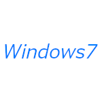

<!DOCTYPE html>
<html>
<head>
    <meta charset="utf-8">
    <meta name="viewport" content="width=device-width, initial-scale=1">
    <title>歴代アイコン</title>
</head>
<body>
</body>
</html>
<body background="Windows7.png">
</dody>
<a href="index.html">Windows7のウェブサイト</a>
&nbsp;&nbsp;
<a href="お知らせ.html">お知らせ</a>
&nbsp;&nbsp;
<a href="更新内容.html">更新内容</a>
&nbsp;&nbsp;
<a href="SNS.html">SNS</a>
&nbsp;&nbsp;
<a href="歴代アイコン.html">歴代アイコン</a>
&nbsp;&nbsp;
<a href="持っている物.html">持っているガジェット</a>
&nbsp;&nbsp;
<a href="注意事項.html">注意事項</a>
&nbsp;&nbsp;
<a href="ブログ.html">ブログ</a>
<head><style type="text/css">
h1{
border: 2px solid #000000;
}
h1{
color:#1100ff;
}
</style><head>
<h1>歴代アカウント画像</h2>



<p>WindowsMe、新Windows7のものは書いておりません</p>
